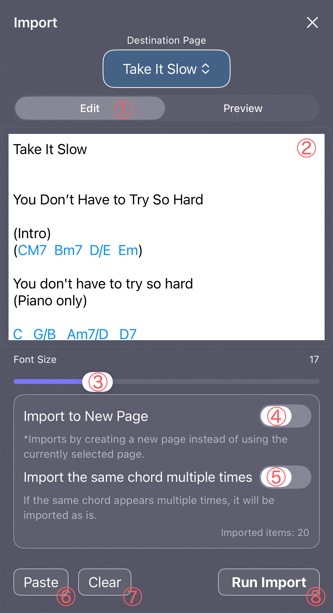
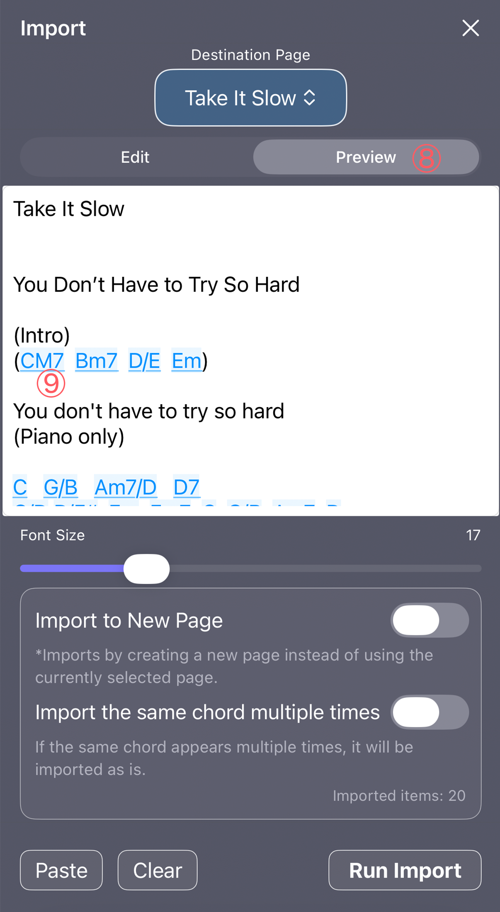
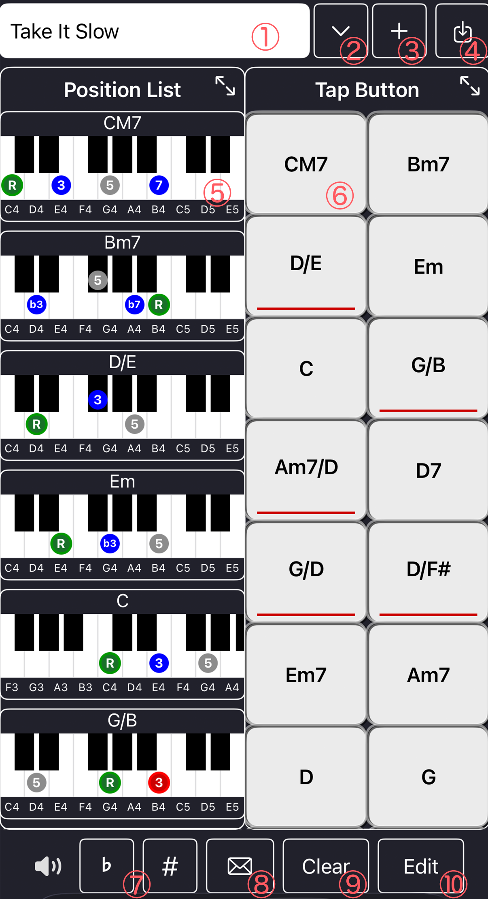

Paste a chord chart, automatically analyze the progression, and import it into Memo
Chord Chart Import is a feature that automatically analyzes a chord progression simply by pasting a chord chart text and imports it into Memo.
Even if lyrics or explanations are included, the app extracts and recognizes the parts that look like chords.
In "Destination Page", select which Memo page the chords will be imported into.
※ In the Pro version, Memo supports page management, making it easier to organize multiple pages.
In Edit Mode, chord-like strings are highlighted to make them easier to read.

① Edit Mode
Mode for entering and editing chord charts. Strings recognized as chords are highlighted.
② Edit Area
Text area where you enter chord charts or chord sheets with lyrics. Chords are automatically analyzed from the pasted content.
③ Font Size Slider
Adjusts the displayed text size. Applies to both Edit Mode and Preview Mode.
④ Import to a New Page Switch
When turned on, the content will be imported into a newly created page instead of the currently selected page.
⑤ Import Same Chords Switch
When enabled, repeated chords are imported as they appear.
⑥ Paste Button
Pastes text from the clipboard into the edit area.
⑦ Clear Button
Deletes all content in the edit area.
⑧ Import Button
Imports the analyzed chord progression into Memo (Pro version only).
In Preview Mode, the analyzed chords are displayed in an easy-to-read format.

⑧ Preview Mode
Mode for checking the analysis results. Recognized chords are displayed clearly.
⑨ Sound Preview Button
In the Pro version, tapping a chord name during preview lets you hear the sound.
While typing, a "Done" button appears on the keyboard so you can close it quickly.
In the Pro version, tapping a chord name displayed in blue allows you to hear the sound immediately.
※ In the free version, tapping chord names during preview does not play sound.
For example, paste a chord chart like the following.
CM7 Bm7 D/E Em
You don't have to try so hard
(Piano only)
C G/B Am7/D D7
G/D D/F# Em Em7 C G/B Am7 D
(Muted arpeggio)
G D/F# Em Em7 C C/B Am7 D
When the morning light feels far too bright
G D/F# Em Em7 C G/B Am7 G
Yesterday’s tears and the smile you couldn’t find
Check the analysis results in Preview, and if everything looks correct, tap "Import" to add it to Memo.
